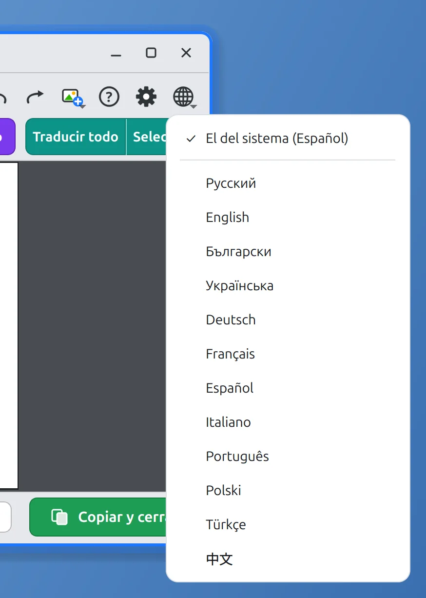
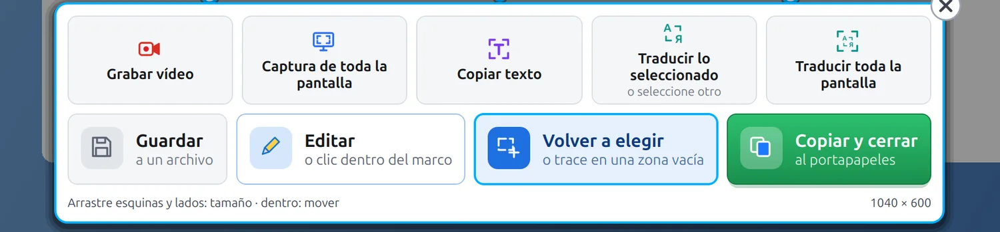
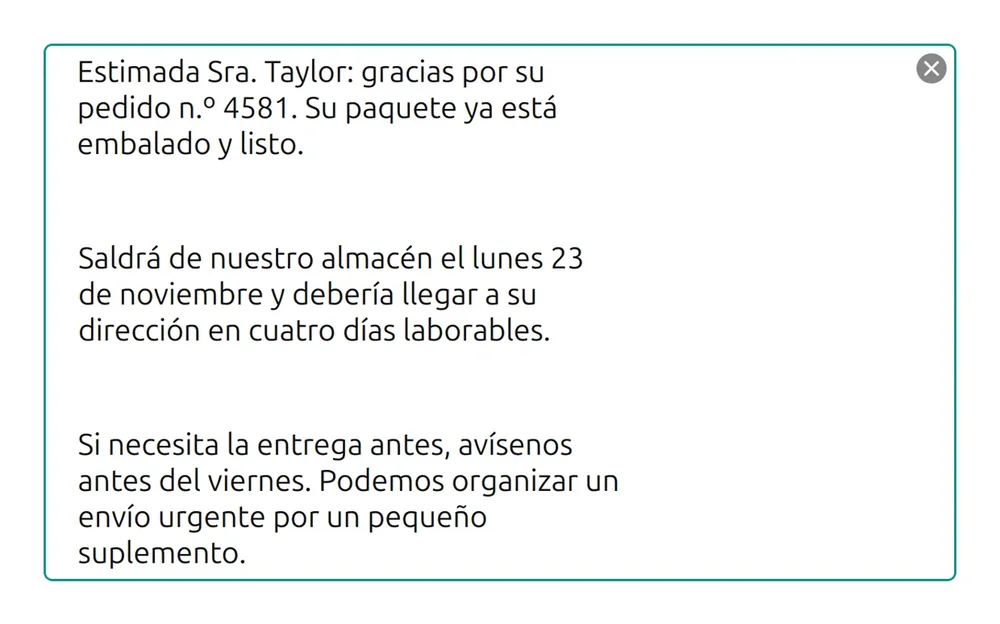
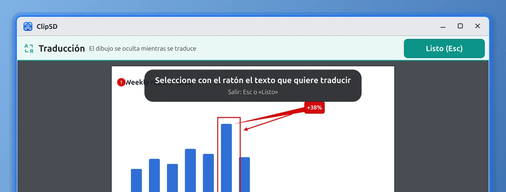
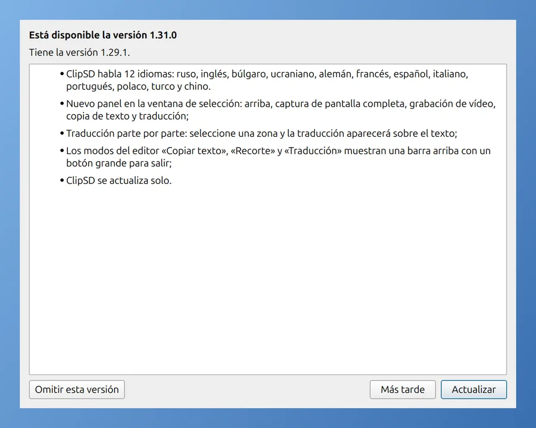

Historial de versiones
Versión 1.31.0
publicada el
- ClipSD habla 12 idiomas: ruso, inglés, búlgaro, ucraniano, alemán, francés, español, italiano, portugués, polaco, turco y chino. El idioma cambia al momento, sin reiniciar: menú del icono junto al reloj, globo en el editor, primer paso del recorrido o configuración.

- Nuevo panel en la ventana de selección: arriba, captura de pantalla completa, grabación de vídeo, copia de texto y traducción; abajo, «Editar», «Guardar» y «Copiar y cerrar».

- Traducción parte por parte: seleccione una zona y la traducción aparecerá sobre el texto; seleccione la siguiente y también se traducirá. Esc termina el modo.

- Los modos del editor «Copiar texto», «Recorte» y «Traducción» muestran una barra arriba con un botón grande para salir; Esc devuelve la herramienta anterior.

- ClipSD se actualiza solo. Una vez al día comprueba si hay una versión nueva y ofrece «Actualizar», «Más tarde» u «Omitir esta versión». Para comprobarlo ahora: menú del icono, «Buscar actualizaciones». La actualización se verifica mediante una firma digital; si la versión nueva no arranca, vuelve la anterior.
